Simple Network Sim - Visualization
Here I take two questions that have come from discussions with the Simple Network Sim folks and use them to show how we apply visualization to begin to answer them, and perhaps other related questions.
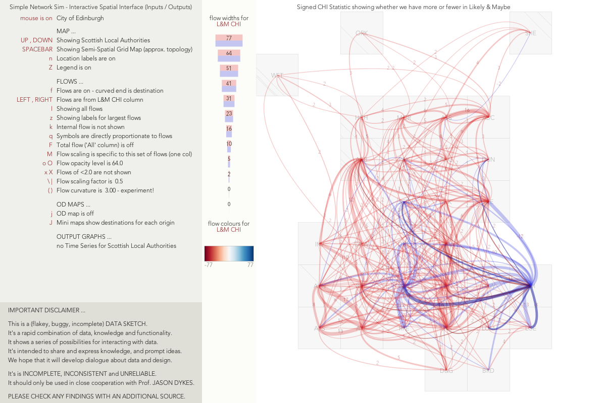
As part of this process, I have put together a (flakey, buggy, incomplete) DATA SKETCH.
It's a rapid combination of data, knowledge and functionality.
It shows a series of possibilities for interacting with inputs and outputs used in simple_network_sim.
It's intended to share and express knowledge, and prompt ideas, initially in relation to two key question that visualization might help with.
We hope that it will develop dialogue about data and design.
It's is INCOMPLETE, INCONSISTENT and UNRELIABLE.
It should only be used in close cooperation with Prof. JASON DYKES.
PLEASE CHECK ANY FINDINGS WITH AN ADDITIONAL SOURCE.
QUESTION 1 - OUTPUT
Origin FG :
model outputs have priority maybe,
e.g. being able to show the time series of people in each healthboard and disease state, through time. At least for myself this is the main thing I need visualization on.
How do the numbers of people in each health state vary geographically over time?
At the moment I have access to sample output files for NHS Boards in Scotland.
| Sample Output |
|---|
 |
| Click for bigger pic |
The model produces data for age groups (3 in the current data set) and states through which the disease progresses as shown in the Model Overview
- S: susceptible
- E: exposed, but not yet infectious
- A: asymptomatic infectious individuals
- I: symptomatic infectious individuals
- H: hospitalised individuals
- R: recovered (assumed immune)
- D: dead
Visual Output
We can outputs for all groups and all states in their spatial contexts with a Grid Map. This layout attempts to maintain some of the original geography while giving each area equal space for graphics. This enables us to consider spatial relationships and variations between outputs and processes.
| Geographic Map | Grid Map | Model Output |
|---|---|---|
 |
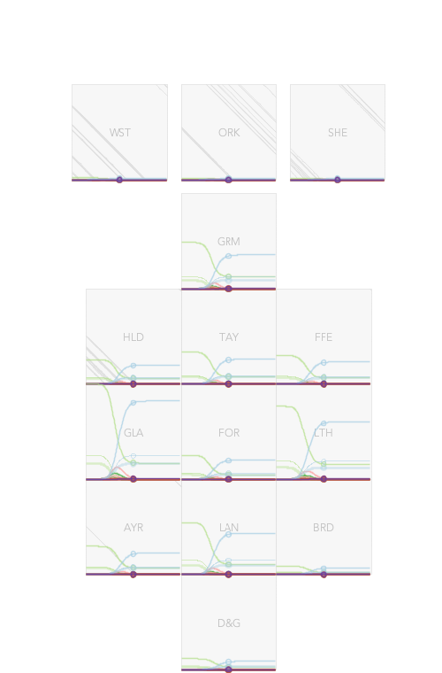 |
We can scale each graphic in different ways, globally to see absolute numbers, regionally as in the original to compare patterns across regions in relative terms, by state so that we can compare patterns and peaks in each health state. This is important as the numbers vary by orders of magnitude across regions and states. Sometimes we need to think about absolutes, at other times we need to think about relative numbers to inform decisions and make valid decisions.
| Global Scale | Region Scaling | State Scaling |
|---|---|---|
| 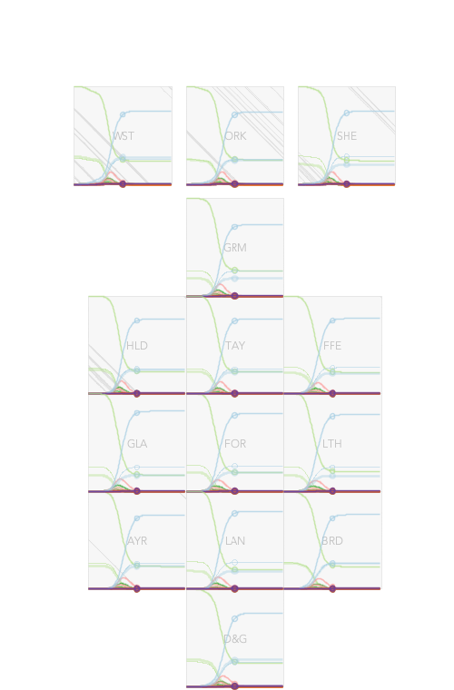 | 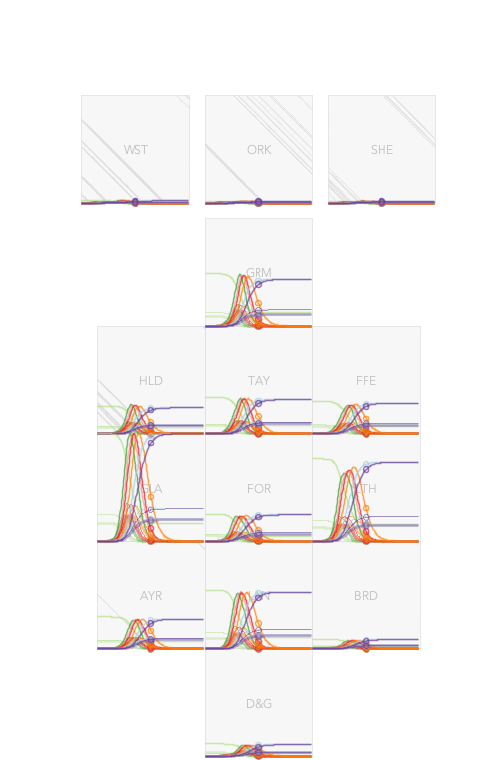 |
We also have data for three different age groups, here they are shown separately with region scaling. Thicker lines are used for older groups.
| aged <18 | aged 18-70 | aged >70 |
|---|---|---|
 |
 |
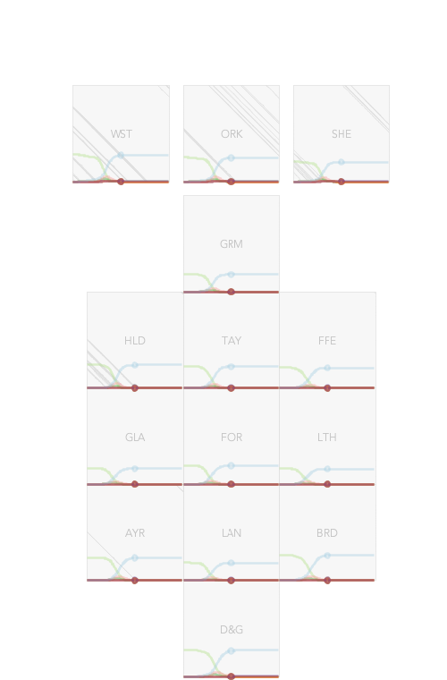 |
It's tough to see things spatially when we are looking at all times concurrently, so we may need to check the outputs for one moment in time.
Here we have numbers for each age group for one health state - Recovered - at three times in the sequence, as shown by the little dots in each graph. Scalings are global here.
| t = early | t = mid | t = late |
|---|---|---|
| 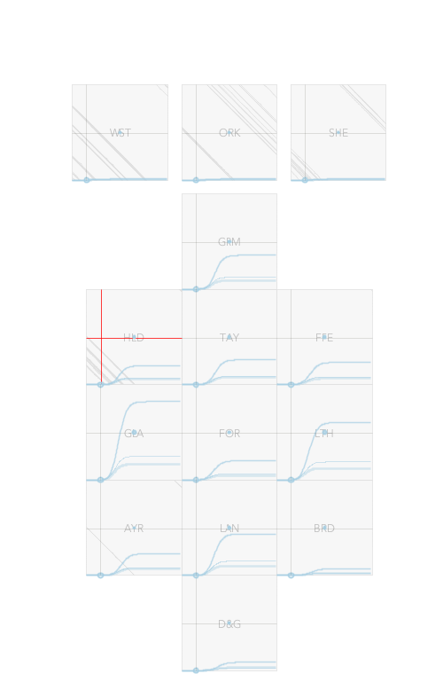 |  |
 |
Of course, with so many options for groups, states of health and scaling, we really need interactive software to help us work out what is going on.
Data Sketch
The Data Sketch shows how this might work, and can be used to check models and establish some preliminary ideas about outputs and their spatio-temporal characteristics.
It runs in Processing 3, and will be available shortly on the giCentre GitHub repo.
You can see how this might all work in a short video that gives some ideas as to current functionality and how it might be used and developed.
| Video on Vimeo |
|---|
| 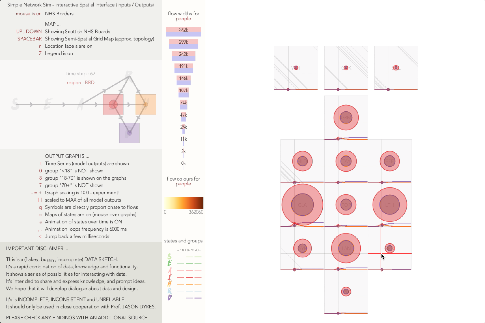 |
| https://vimeo.com/435490241 password : snsVIS |
(Back to) The Question?
How do the numbers of people in each health state vary geographically over time?
Well, there are no clear spatial patterns in what are extremely regular temporal patterns in the sample outputs.
But hopefully the visualization gives us a sense of the complexity and variation that we can expect, and the kinds of functionality we might use to begin to explore and understand it.
As model outputs develop, it's likely that this kind of interactive spatio-temporal visualization will help us understand them.
QUESTION 2 - INPUT
Origin JE :
how different are the networks used as inputs if we make different assumptions about which sectors of the workforce are travelling to work under different lockdown scenarios?
Does it make a difference which types of workers we include in the INPUT NETWORK?
How does this vary with space and scale?
NHS Boards
Each of these maps show daily flows between NHS Boards for those travelling to work. We used curved lines to show flow direction - the curved end is the destination of the flow. So we can see irregular ellipses where flows are stronger in one direction than the other.
The first two maps are different projections of the dame data. The third shows the flows in and out of Lothian (LTH) with the LTH->GLA flow being the biggest between board flow.
The fourth shows internal flows (those traveling to work within NHS Health Boards) with Edinburgh (LTH) and Glasgow having the most within NHS Board commuters. These internal flows use are scaled in the same way as the region-region flows, with width representing the number of people travelling to work within each local authority.
| Flow Map All Flows |
Grid Map All Flows |
Lothian Flows (LOT) |
Grid Map with Internal Flows |
|---|---|---|---|
 |
 |
 |
 |
Local Authorities
We have flow data by employment sector for Local Authorities and have done more work at this level.
Let's look at all daily trips to work ...
| All Daily Travel | All Daily Travel - Flows of > 128 people |
|---|---|
 |
 |
| All trips to work, with line widths representing number of daily flows. | The smaller flows may be important, but let's filter them out for now. |
| All Daily Travel | All Daily Travel - Grid Map |
|---|---|
 |
 |
| We re-project on to the grid map, which retains the essence of the original geography, but gives us equal space for each LA. | This gives us the room to show the internal flows the width of each vertical line is proportional to the number of people travelling to work within each LA, using the same scale as we use for the flows between local authorities. |
The key question that we're interested in is whether or not it makes a difference if we consider different flow networks as input into the simulation model. We use the census, which provides data relating to daily travel to work. If we make different assumptions about who is moving, and thus how many people are moving between each area for which we have data, then the model will produce different outputs. The census gives us data about numbers of people who move between areas per employment sector. We have aggregated these into 4 groups for analysis :
- Likely Operating - workers in sectors that are Likely to be operating during Lockdown
- Maybe - workers in sectors that May be operating during Lockdown
- Closed (office) - workers in sectors that are Closed during Lockdown (office)
- Closed (other) - workers in sectors that are Closed during Lockdown (not office)
We also have the total figures for All workers.
Let's look at daily flows within (vertical lines) and between (curved lines) Local Authorities. In each map the grey flows show the total - All daily trips to work as recorded in the census.
| Likely Operating | Maybe | Closed (office) | Closed (other) |
|---|---|---|---|
| 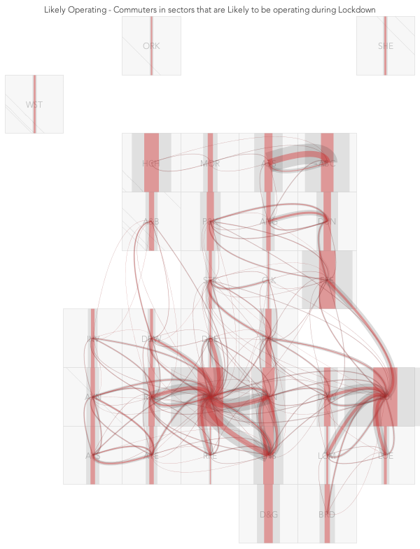 | 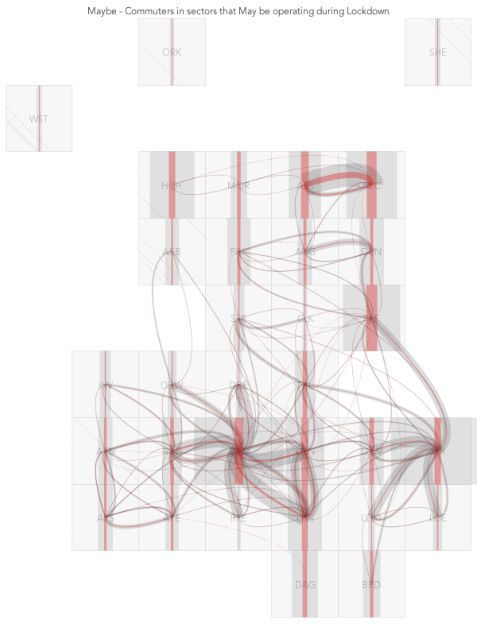 | 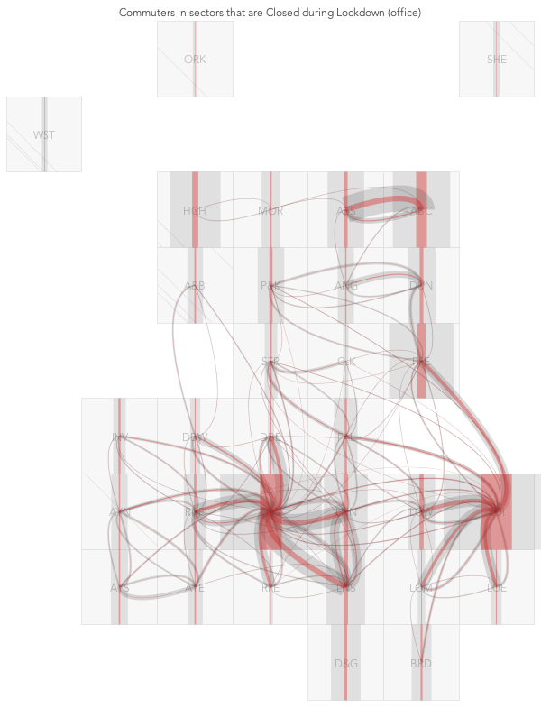 | 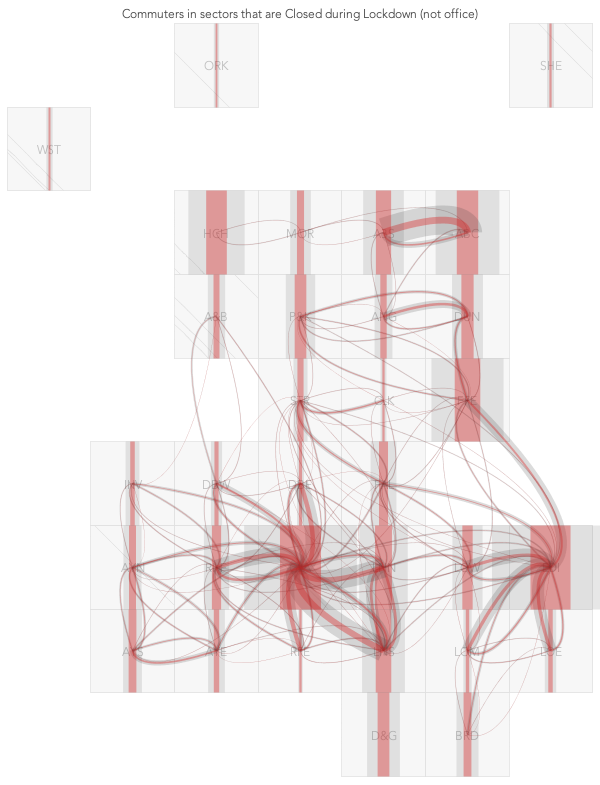 |
It's a complex picture, even when we cut it down to the larger daily flows, but we can see differences that strongly suggest that the way we model the input network with employment types may have effect.
Let's look at differences in the number of people travelling to work each day.
One thing we can look at is the difference between categories. For example, are there big differences between the numbers in Closed Office and Likely Operating.
This simple difference shows positive numbers in red and negatives in blue. The mass of blue shows us that the biggest differences are for internal flows (which is where most of the movement is, as we have seen) and that in most cases there are fewer people in the Closed Office sectors that in Likely Operating. But the red flows are very spatially focussed - on Edinburgh City, where many of flows in to the city contain more people in the Likely Operating sectors than in Closed Office. These are not large numbers, comprising of differences of hundreds rather than thousands of people, around 5-10% of all flows, but the phenomenon is peculiar to Edinburgh.
The differences between the roles moving in and out of Aberdeen are also noticeable.
| Closed Office - Likely Operating | Closed Office - Likely Operating Edinburgh City only |
Geographic Projection |
|---|---|---|
| 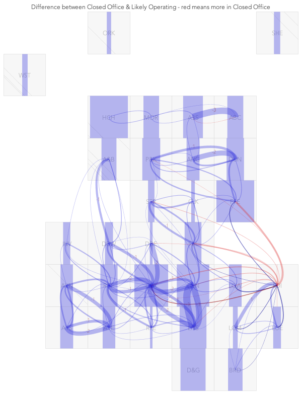 | 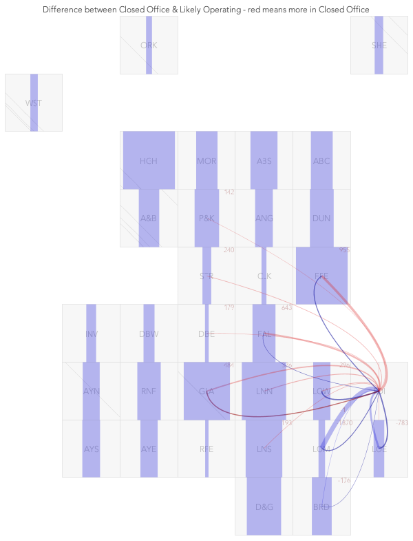 |  |
The absolute numbers may be interesting, but looking at the differences between the proportions we might expect in the Likely Operating category given the sizes of flows in All provides useful insights. We can use a signed CHI statistic for this. We look at the overall numbers in All and Likely Operating and use the All proportions to calculate expectations for Likely Operating. The assumption here is that we might expect to have fewer people travelling under lockdown, but the numbers might reduce by the same proportions across the board. We compare the numbers expected under this proportional assumption to the observed numbers in Likely Operating and scale by the expectation - thereby favouring proportionate deviations from large flows over small ones. This lets us see where, and how, the use of Likely Operating as an input differs from using All. If there is spatial structure to the differences, then this is likely to be important in the simulation modelling.
| Signed CHI statistic Larger Differences |
Larger Differences Glasgow highlighted |
Signed CHI statistic All flows |
|---|---|---|
 |
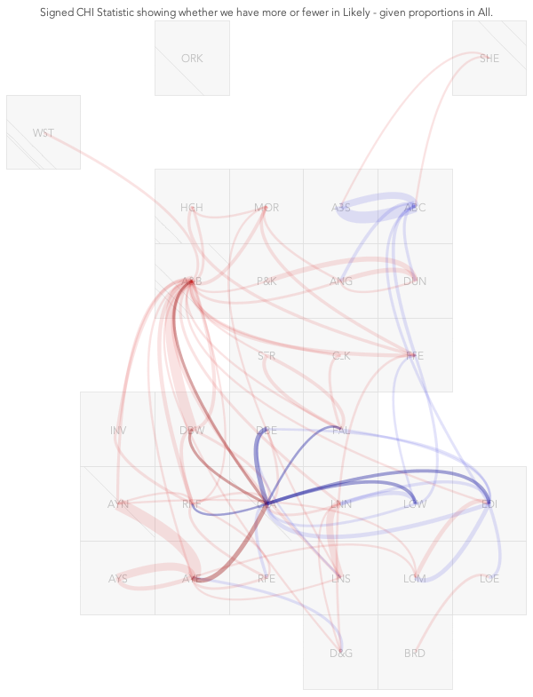 |  |
Here we see patterns that show Likely Operating flows to be very different from All, with clear spatial structure. Aberdeen, Edinburgh and Glasgow are the focus of Likely Operating flows that are smaller than we might expect given the numbers in All. Flows out of Edinburgh, between Aberdeen, and north and east from Glasgow are smaller than we expect under the proportions that we see in All. Flows west from Glasgow and particularly into Argyll & Bute are consistently greater in Likely Operating than we might expect given All. These are not big numbers, but they do show clear spatial differences between the Likely Operating and All flows.
Geographic trends in differences between All daily trips and Likely Operating are particularly clear in the second Grid Map with Glasgow selected. Blue to the north and east means fewer trips under Likely Operating than under the All input network, red to the west means more.
Looking at all flows suggests that these patterns persist when smaller differences between All daily flows and Likely Operating are considered.
The grid maps are a little unfamiliar, so let's consider two more views.
The patterns persist if we check the geographic projection, with the lower than expected numbers for flows north-west out of the central valley and the larger than expected flows east dominating.
Each OD map shows a map of destinations from the location at which the map is positioned. If there were no spatial effects then we would expect red and blue cells to be randomly distributed. But the clear patterns show spatial structure in the differences between Likely Operating and All, meaning that it is likely that there will be spatial effects in the model outputs depending upon which of these flow networks is used to model spatial interaction.
| Geographic Projection Central Valley Highlighted |
OD Map No Highlights |
|---|---|
| 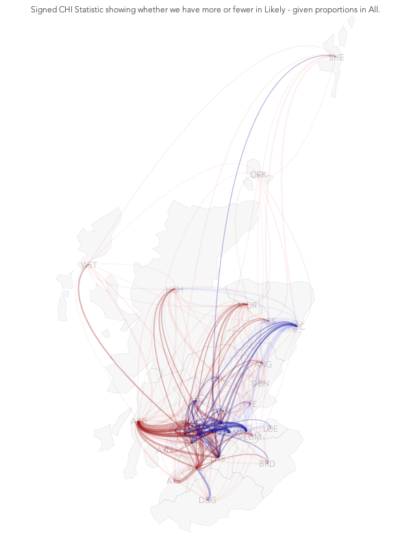 |  |
| Blue lines show fewer trips west from the highlighted Central Valley under the Likely Operating input network, and also Aberdeen City in the north-west | OD map shows maps of destinations for all (circular) origins. Clusters of read and blue show clear spatial structure in differences between All and Likely Operating. |
Data Sketch
Of course, we need to consider all of these graphics, and others, quickly as we assess the data, with controls and interactions to specify what we see and how we see it. The Data Sketch shows how this might work.
This second short video gives some ideas as to current functionality for assessing inputs and shows how it might be used and developed.
| Video on Vimeo |
|---|
 |
| https://vimeo.com/435735366 password : snsVIS |
(Back to) The Question?
Does it make a difference which types of workers we include in the INPUT NETWORK?
How does this vary with space and scale?
Briefly, YES, even at this large scale (Local Authority).
Preliminary work at MSOA level suggests pronounced differences in daily travel between employment sectors and so the input network will be sensitive to this (see below).
We should experiment with inputs to see effects on model outputs.
Interactive visualization may help!
Preliminary Work - (on with) The Question?
MSOAs - Glasgow and Strathcylde
Data are likely to be available at Data Zone level, and we may be modelling at much finer resolution. We have looked at MSOAs in Glasgow and Strathcylde to get a sense of the variation at this scale. MSOAs are a little bigger than Data Zones.
| Geographic Projection | Grid Map |
|---|---|
 |
 |
| Largest flows between MSOAs | Largest flows between MSOAs |
We can calculate differences between the numbers of trips observed in Likely Operating and those expected under the assumption that proportions are in line with All flows.
These simple difference maps show origins of those who travel to each destination (so these are DO Maps!). There is definite spatial structure at this scale. Flows in to the City Centre and some other areas south east of the Clyde are consistently blue , meaning that we have fewer people and smaller flows into these destinations than we would expect.
But there are also destinations that have many red lines converging on them. These are the areas in which we have relatively more trips under Likely Operating than we would expect under the proportions predicted by the flows that we see in All .
Absolute differences are in the 20s, 40s, 60s for each pair of MSOAs, but the blue and red spatial structure shows that there are geographic differences in the flows associated with different employment sectors.
| Flow Map - Largest FLows |
|---|
 |
| Largest flows between MSOAs shown as a flow map in which particular destinations have very clear signatures of flows that are greater (red) or less (blue) than predicted by All flows. |
| DO Map - All Flows |
|---|
 |
| All flows between MSOAs are shown in maps of the origins of flows arriving at each each destination. The focussed coloured maps show that the big differences are in certain destinations, and the consistently red (greater numbers) or blue (lower numbers) nature of these maps means that flows from all sources are consistently under-or over predicted. |
Preliminary analysis suggests that the effects are more significant at higher resolution.
Analysis summary to come ...
Jason DYKES
5th July 2020
6th July 2020